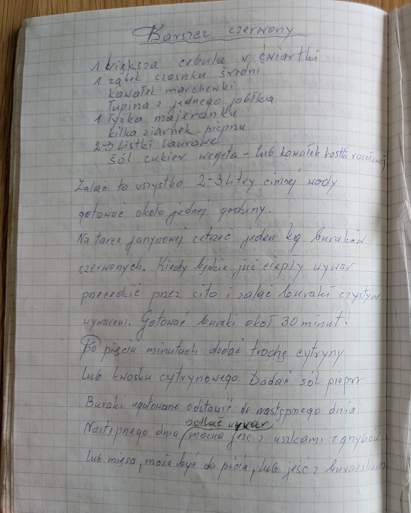

Barszcz czerwony


Składniki
- 1 większa cebula
- 1 średni ząbek czosnku
- kawałek marchewki
- łupina z jednego jabłka
- 1 łyżka majeranku
- kilka ziaren pieprzu
- 2-3 liście laurowe
- sól, cukier, wegeta lub kawałek kostki rosołowej
- 2-3 litry zimnej wody
- 1 kg czerwonych buraków
- cytryna lub kwasek cytrynowy
Przygotowanie
- Cebulę w ćwiartkach, czosnek, marchewkę, łupinę jabłka i przyprawy zalać 2-3 litrami zimnej wody i gotować około godziny.
- Zetrzeć 1 kg buraków na tarce jarzynowej.
- Ciepły wywar przecedzić przez sito i zalać nim buraki.
- Gotować buraki około 30 minut; po pięciu minutach dodać trochę cytryny lub kwasku, sól i pieprz.
- Odstawić do następnego dnia.
- Następnego dnia odlać wywar – jeść z uszkami z grzybów lub mięsa, pić z kubka albo jeść z buraczkami.
Oryginalny zapis
Barszcz czerwony
1 większa cebula w ćwiartki
1 ząbek czosnku średni
kawałek marchewki
łupina z jednego jabłka
1 łyżka majeranku
kilka ziarnek pieprzu
2-3 listki laurowe
sól cukier wegeta – lub kawałek kostki rosołowej
Zalać to wszystko 2-3 litry zimnej wody
gotować około jednej godziny.
Na tarce jarzynowej zetrzeć jeden kg buraków
czerwonych. Kiedy będzie już ciepły wywar
przecedzić przez sito i zalać buraki czystym
wywarem. Gotować buraki około 30 minut.
Po pięciu minutach dodać trochę cytryny
lub kwasku cytrynowego Dodać sól pieprz
Buraki ugotowane odstawić do następnego dnia
odlać wywar
Następnego dnia (można jeść z uszkami z grzybów
lub mięsa, może być do picia, lub jeść z buraczkami